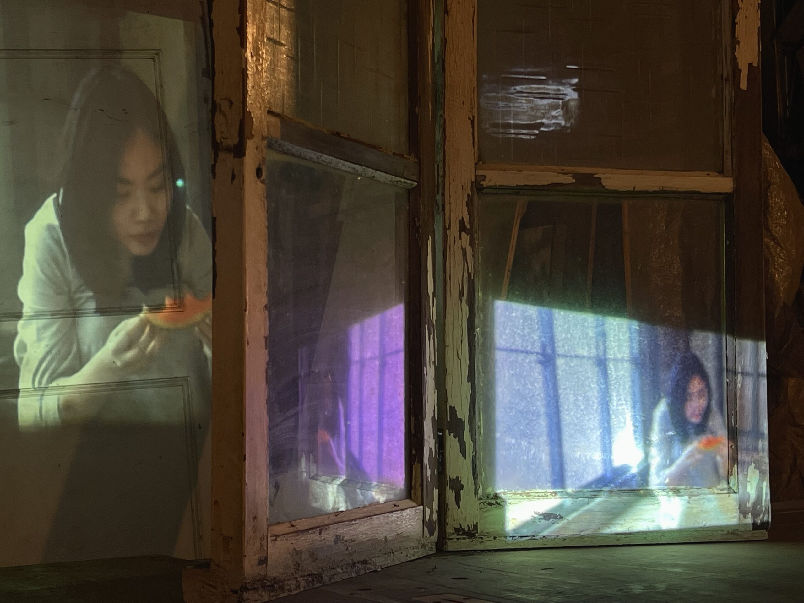

國際
生活
藝文
新知
____ ____ ____
國際
生活
藝文
新知
畫作、雕塑、戲劇...從多采多姿的藝文展覽中，看見大學生的無窮創造力與生命力。
澎湖是故鄉還是異地？ 〈記北辰市場〉寫盡身份混亂
國立成功大學台灣文學系學生高于棋以〈記北辰市場〉一詩，獲得第25屆菊島文學獎社會組現代詩佳作，為32名得獎者中唯一的大學生⋯⋯
茶湯融入空間設計 引光入室「濾」出茶道精神
天井灑落的光線，在層層沖孔板過濾下由白轉褐，隱喻茶湯由白水煎煮成黃褐的過程。中原大學的蘇俊璋、李珮溱榮獲2022美國建築大師獎商業空間類別全場大獎⋯⋯
《無眠》映生死徬徨心境 北藝大戲劇探自殺意義
「人究竟有沒有權利自殺？有沒有權利阻止別人自殺？」國立臺北藝術大學戲劇學院畢業製作《無眠》⋯⋯
跳脫陶藝無暇印象 《大崎六六》玩轉土材新可能
國立臺南藝術大學應用藝術所陶瓷組的研究生皆展出自己的陶藝創作，其中包含具實用性的陶瓷器皿以及非實用目的藝術創作，探索陶藝媒材的可能性⋯⋯
等比例再現廢棄空間 《1：1》紙上轉譯褪色記憶
「希望在被拆除、被遺忘之前，你至少再看它一眼。」國立臺灣藝術大學雕塑學系碩士生丘智偉舉辦個展《1：1》⋯⋯
一同尋光吧！ AR作品融關渡文化於光藝術節
作品〈尋光〉在北藝大舉辦的關渡光藝術節《濟濟》中展出。本屆光藝術節首次跨出校園，於10月28日在關渡中港河碼頭開幕⋯⋯
演出最後一場自己 《千秋場》探問劇場存續
「如果這是劇院的最後一場演出，我要把舞台的大幕剪掉，讓它永遠不會落幕。」國立臺北藝術大學戲劇學院2022秋季公演《千秋場》⋯⋯

投影再現拆遷現場 《曠日廢時》映都更家屋記憶
走進南海藝廊深處一塊連通室內、外的水泥地，播放中的影像和現場堆置的雜物重疊，難以辨認何者才是作品⋯⋯
《震盪之前》再現工廠景象 重組廢棄物緬懷消逝記憶
「在我的作品中，隨機性一直都蠻重要的，我希望它是浮動的，甚至是會壞掉的。」就讀北藝大的鄭文豪創作《震盪之前》，在2022臺北美術獎獲得入選獎⋯⋯